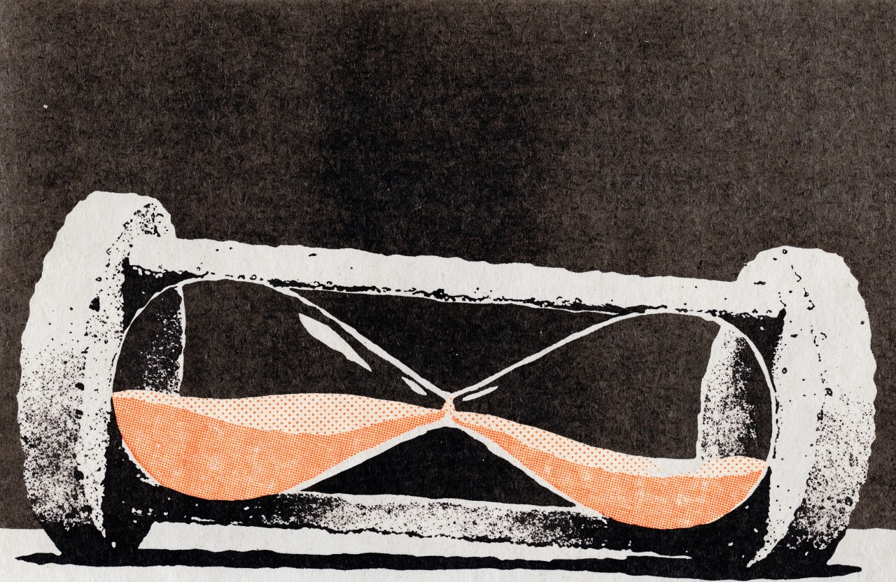

Menos de cinco horas
El 12 de octubre, la Fiscalía de Morelos detuvo en Totolapan al Güero Gym y lo entregó cuatro horas con 45 minutos después a cambio de tres agentes retenidos. Seis días más tarde, Bukele mandó más de dos mil soldados a Haití por cuatro militares secuestrados. Con Thomas Schelling y la credibilidad del compromiso: lo que aprende cada grupo cuando el Estado cede en una tarde, el precedente de Culiacán y por qué ni la firmeza prueba que no haya pacto ni ceder prueba que lo haya.

El 12 de octubre, poco antes de las tres de la tarde, la Fiscalía de Morelos detuvo en Totolapan a José David "N", conocido como el Güero Gym, a quien ella misma vincula con el grupo Pueblos Unidos. A las siete y media de la noche lo entregó. Entre una hora y otra hubo bloqueos carreteros, vehículos quemados y la retención de tres colaboradores de la Fiscalía Regional Oriente, uno de ellos herido de bala. Cuatro horas con cuarenta y cinco minutos, según la reconstrucción que esta casa publicó en Todo se cumplió menos la orden, le bastaron al Estado para devolver a un detenido a cambio de sus propios agentes.
Seis días después, una pandilla emboscó en Croix-des-Bouquets, al norte de Puerto Príncipe, a cuatro técnicos de aviación de la Fuerza Armada de El Salvador que forman parte de la Fuerza de Supresión de Pandillas respaldada por la ONU. Su paradero sigue sin conocerse. La respuesta de Nayib Bukele fue un despliegue de más de dos mil militares, según su propio anuncio, que EFE describe como el mayor de un solo país en Haití desde el fin de la misión de Naciones Unidas en 2017. El gobierno salvadoreño dice pagarlo casi por completo, y el presidente lo acompañó con una advertencia pública: "Ya acabamos con las pandillas en El Salvador, y también podemos acabar con ustedes".
Lo que se aprende en una tarde
Nadie serio discute que había que recuperar a los tres agentes. La presidenta Claudia Sheinbaum lo resumió el 13 de octubre: "Son decisiones que se toman para salvar vidas". En la misma conferencia dejó claro que el operativo y la decisión correspondieron a las autoridades estatales, que debían explicarlos. Por su parte, el fiscal general Fernando Blumenkron Escobar sostuvo que fue una determinación institucional y que no se puede decir "que la delincuencia doblegó al gobierno del estado".
El problema no está en la decisión de esa noche, sino en lo que enseña. Thomas Schelling, premio Nobel de Economía en 2005, lo planteó en The Strategy of Conflict (1960): en una negociación bajo amenaza, la fuerza de cada parte depende de lo que la otra cree que hará. Quien se ata las manos en público gana credibilidad porque ya no puede retroceder; quien cede, por el contrario, revela su precio. Bukele se ató las manos frente a las cámaras. En Totolapan cada organización de la región aprendió cuánto dura la resistencia del Estado y qué basta para vencerla: un bloqueo, unos rehenes, una tarde.
Tampoco se trata de una lección nueva. El 17 de octubre de 2019, en Culiacán, el gobierno federal capturó a Ovidio Guzmán y lo liberó unas cuatro horas después, tras una jornada de enfrentamientos; en junio de 2020 el entonces presidente Andrés Manuel López Obrador admitió que él ordenó dejar en libertad a quien llamó "presunto delincuente", para salvar vidas. Siete años más tarde la escena se repite en Morelos con un reloj casi idéntico y con la misma justificación. Para quien denuncia una extorsión y espera semanas a que alguien lo atienda, el contraste pesa: la autoridad responde en horas a quien bloquea una carretera, mientras que a quien cumple la ley lo atiende cuando puede.
En Totolapan no se entregó solamente a un detenido; se entregó la poca confianza que le quedaba a quien todavía denuncia.
La frase de la colusión
De ahí nace una idea que se repite en la calle: cuando un gobernante no está coludido, actúa con firmeza. Tiene su lógica, ya que quien no le debe nada al crimen no tiene motivo para negociar con él. Aun así, la frase no resiste el caso que la inspira. El 8 de diciembre de 2021, el Departamento del Tesoro de Estados Unidos sancionó a Osiris Luna y a Carlos Marroquín, dos funcionarios del gobierno de Bukele, acusándolos de organizar reuniones secretas con líderes encarcelados de la MS-13 para negociar una tregua. El gobierno salvadoreño y los señalados lo han negado. O sea, el mandatario de la firmeza también ha sido señalado de pactar, de modo que la firmeza no prueba la ausencia de un acuerdo, como ceder tampoco prueba su existencia.
Esta columna no afirma que alguien en el gobierno de Morelos esté coludido con Pueblos Unidos. Lo que sí consta es otra cosa. Según las autoridades estatales, el detenido fue asegurado por posesión simple de narcóticos y no tenía orden de aprehensión vigente, pese a que el 18 de febrero el entonces secretario de Seguridad, Miguel Ángel Urrutia, anunció en conferencia órdenes contra un generador de violencia con el alias de El Güero en esa misma región. Esta casa sostiene, como lectura editorial y no como dato oficial, que se trata de la misma persona. Después, el secretario de Seguridad federal, Omar García Harfuch, prometió volver a detenerlo; al cierre de esta columna no se ha informado su recaptura.
Lo que corta en contra
El contraste tiene límites que conviene decir. La firmeza de Bukele todavía no ha rescatado a nadie: una ONG entregó restos humanos que podrían corresponder a los militares, el presidente rechazó que fueran ellos y la propia fuerza internacional no ha podido confirmarlo. Esa fuerza, prevista para 5,500 efectivos, opera con unos 2,000. Además, el modelo que hoy exporta descansa en un régimen de excepción decretado en marzo de 2022, en el que Human Rights Watch y Cristosal documentaron detenciones masivas e indiscriminadas. La firmeza también puede ser espectáculo.
Del lado de Morelos, la debilidad puede ser falta de medios antes que falta de voluntad. El secretario de Seguridad estatal, José Luis Bucio Quiroz, reconoció que la policía del estado opera con 918 elementos en dos turnos, y los tres agentes retenidos ni siquiera formaban parte del operativo. Un Estado que no tiene con qué sostener una detención en Totolapan no se vuelve firme por decreto.
Queda entonces la pregunta que esta columna no puede responder por el lector. Cuando un gobierno cede en menos de cinco horas, ¿es por miedo, por falta de medios o porque le debe algo a alguien? Lo que sí puede decirse es lo que se perdió esa noche. En Totolapan no se entregó solamente a un detenido; se entregó la poca confianza que le quedaba a quien todavía denuncia.
- Plano Informativo, "Exhibe captura fallas de la FGE Morelos", 14 de octubre de 2026 (captura hacia las 14:50, liberación anunciada a las 19:30, posesión simple de narcóticos, sin orden de aprehensión, 918 elementos en dos turnos): planoinformativo.com/1175607/exhibe-captura-fallas-de-la-fge-morelos
- Infobae/EFE, "Liberan a presunto criminal a cambio de 3 agentes retenidos en estado mexicano de Morelos", 13 de octubre de 2026: infobae.com/america/agencias/2026/10/13/liberan-a-presunto-criminal-a-cambio-de-3-agentes-retenidos-en-estado-mexicano-de-morelos
- El Universal, "Fiscalía de Morelos defiende intercambio de detenido por tres agentes ministeriales", 13 de octubre de 2026: eluniversal.com.mx/estados/fiscalia-de-morelos-defiende-intercambio-de-detenido-por-tres-agentes-ministeriales-asegura-que-fue-una-decision-institucional
- Expansión Política, Sheinbaum y García Harfuch sobre la liberación en Totolapan, 13 de octubre de 2026: politica.expansion.mx/presidencia/2026/10/13/sheinbaum-liberacion-detenido-morelos-salvar-vidas
- UnoTV, "Continúan investigaciones para recapturar al Güero Gym": unotv.com/estados/morelos/continuan-investigaciones-para-recapturar-al-guero-gym
- 45 Digital Noticias, Todo se cumplió menos la orden (conferencia del 18 de febrero de 2026 y reconstrucción del 12 de octubre): 45digitalnoticias.github.io/columnas/todo-se-cumplio-menos-la-orden.html
- BBC Mundo vía Yahoo Noticias, "5 claves de la crisis por los militares de El Salvador secuestrados en Haití": es-us.noticias.yahoo.com/5-claves-crisis-militares-salvador-130935040.html
- BioBioChile/EFE, "Bukele muestra despliegue militar de El Salvador en Haití para misión de rescate y niega invasión", 29 de octubre de 2026: biobiochile.cl/noticias/internacional/america-latina/2026/10/29/bukele-muestra-despliegue-militar-de-el-salvador-en-haiti-para-mision-de-rescate-y-niega-invasion.shtml
- CNN en Español, "Secuestran a cuatro soldados salvadoreños en Haití; Bukele amenaza con represalias", 21 de octubre de 2026: cnnespanol.cnn.com/2026/10/21/latinoamerica/haiti-soldados-salvador-bukele-orix
- Expansión, "EU sanciona a funcionarios de El Salvador por negociar con pandillas MS-13", 8 de diciembre de 2021: expansion.mx/mundo/2021/12/08/eu-sanciona-a-el-salvador-por-negociar-con-pandillas-ms-13
- Expansión Política, "AMLO admite que él ordenó la liberación de Ovidio Guzmán", 19 de junio de 2020: politica.expansion.mx/mexico/2020/06/19/amlo-admite-que-el-ordeno-la-liberacion-de-ovidio-guzman
- Thomas C. Schelling, The Strategy of Conflict, Harvard University Press, 1960. ISBN 978-0674840317.
- Wikipedia, Thomas Schelling (Nobel de Economía 2005, compartido con Robert Aumann): es.wikipedia.org/wiki/Thomas_Schelling
- ADN40, cronología del Culiacanazo (cerco a las 14:30, liberación decidida a las 18:49): adn40.mx/seguridad/2026-10-17/culiacanazo-la-cronologia-del-operativo-que-termino-con-la-liberacion-de-ovidio-guzman
- Voz de América, informe de Human Rights Watch y Cristosal sobre el régimen de excepción, 7 de diciembre de 2022: vozdeamerica.com/a/informe-hrw-denuncia-abusos-reiterados-durante-regimen-de-excepcion-en-el-salvador/6866284.html
Las ligas van a la vista para que cualquiera compruebe por su cuenta. Si alguna dejó de resolver, escríbenos y la reponemos.
SRVO